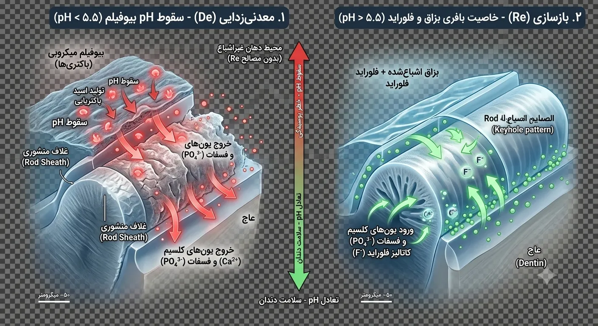

نسخه استخراجشده؛ ترجمه یا تأیید علمی انجام نشده است. وضعیت: captured
یک فرآیندِ یکطرفه نیست، بلکه نتیجهیِ به هم خوردنِ تعادلِ بین دو فرآیندِ رقیب در سطحِ دندان است:
دمینرالیزاسیون (Demineralization - De): زمانی که باکتریها اسید تولید کرده و pH بیوفیلم به زیر ۵.۵ میرسد، بزاق از املاح غیراشباع شده و یونهای کلسیم و فسفات از کریستالهای مینا خارج میشوند (همانطور که در تصویر راهنما با فلشهای قرمز و لیبل فارسی "خروج یونها" نشان داده شده است). این آغازِ تخریب است.
ریمینرالیزاسیون (Remineralization - Re): زمانی که pH محیط با کمک بزاق به بالای ۵.۵ بازگردد، بزاق از املاح اشباع شده و دوباره یونهای کلسیم و فسفات را واردِ داربستِ بلوریِ دندان میکند (فلشهای سبز و لیبل فارسی "ورود یونها").

تغییرات pH بیوفیلم پس از مصرفِ کربوهیدراتهایِ قابلِ تخمیر، توسط منحنیِ استفان (Stephan Curve) توصیف میشود.
🔑 ویژگیهای منحنی:
سقوط سریع: بلافاصله پس از مصرف قند، باکتریها اسید تولید کرده و pH بیوفیلم در عرض چند دقیقه به شدت سقوط میکند و به زیر pH بحرانی (۵.۵) میرسد.
دوران De: تا زمانی که pH زیر ۵.۵ باقی بماند، فرآیند معدنیزدایی ادامه دارد.
بازگشت کند: بزاق به آرامی اسید را خنثی میکند و حدود ۲۰ تا ۴۰ دقیقه طول میکشد تا pH مجدداً به بالای ۵.۵ (محدوده Re) بازگردد.
تکرار چالش: اگر فرکانسِ مصرفِ قند زیاد باشد، دهان دائماً در وضعیت De قرار میگیرد و فرصت Re پیدا نمیکند.
فلوراید قدرتمندترین ابزار بیوشیمیایی برای کنترل این چرخه است. نقش اصلی آن نه در De، بلکه در Re است:
🔑 سلاحهای فلوراید:
تسریع Re (کاتالیزور): فلوراید مانند یک کاتالیزور عمل کرده و سرعت و میزانِ ورودِ کلسیم و فسفاتِ بزاق را به داربستِ دمینرالیزهشده به شدت بالا میبرد.
تشکیل فلورآپاتیت (FA): با جایگزینی در شبکه کریستالی، فلورآپاتیت را میسازد که pH بحرانی آن ۴.۵ است.
لایه محافظ (CaF2): با غلظت بالای فلوراید کلینیکی (مثل وارنیش)، لایهای از کلسیم فلوراید (CaF_2) روی دندان رسوب میکند که به عنوان منبعِ ذخیرهیِ فلوراید در زمانِ چالشِ اسیدی عمل میکند.